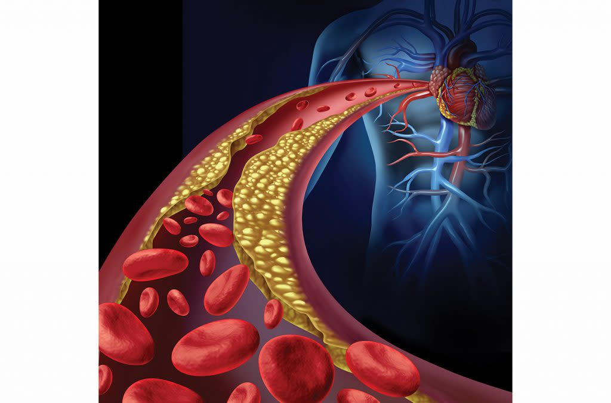
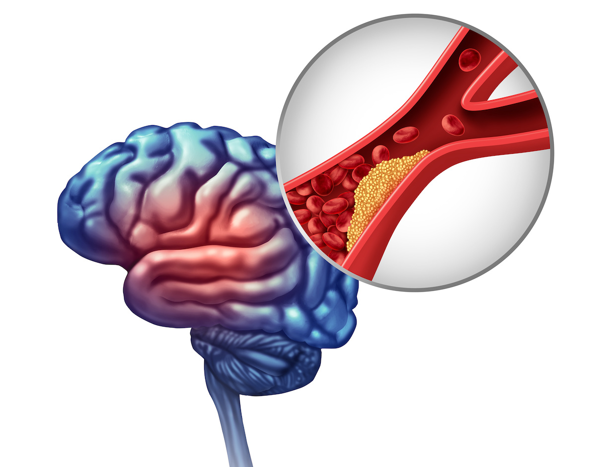
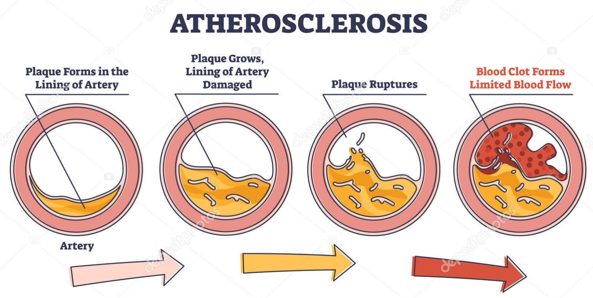

La enfermedad coronaria ocurre cuando las arterias que suministran sangre al corazón se estrechan o bloquean debido a la acumulación de colesterol y otras sustancias. Esto puede provocar dolor en el pecho, dificultad para respirar e incluso un ataque cardíaco.

Un accidente cerebrovascular puede ocurrir cuando el flujo de sangre hacia una parte del cerebro se interrumpe debido a una arteria bloqueada. Los niveles elevados de colesterol aumentan el riesgo de padecer esta enfermedad.

La aterosclerosis es una enfermedad en la que las arterias se endurecen y estrechan debido a la acumulación de grasa y colesterol en sus paredes. Esto dificulta la circulación sanguínea y puede provocar problemas graves de salud.
